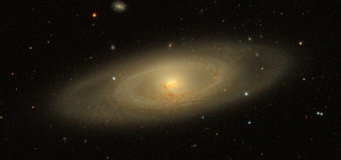

The NASA-Sloan Atlas is a catalog of images and parameters of local galaxies, from surveys in the ultraviolet, optical and near-infrared. Our focus in the near term is on the Sloan Digital Sky Survey, Galaxy Evolution Explorer, and Two-Micron All Sky Survey data sets. Our goal is to create a consistent, unified analysis of galaxies within about 200 megaparsecs (about 600 million lightyears) from these three surveys.
